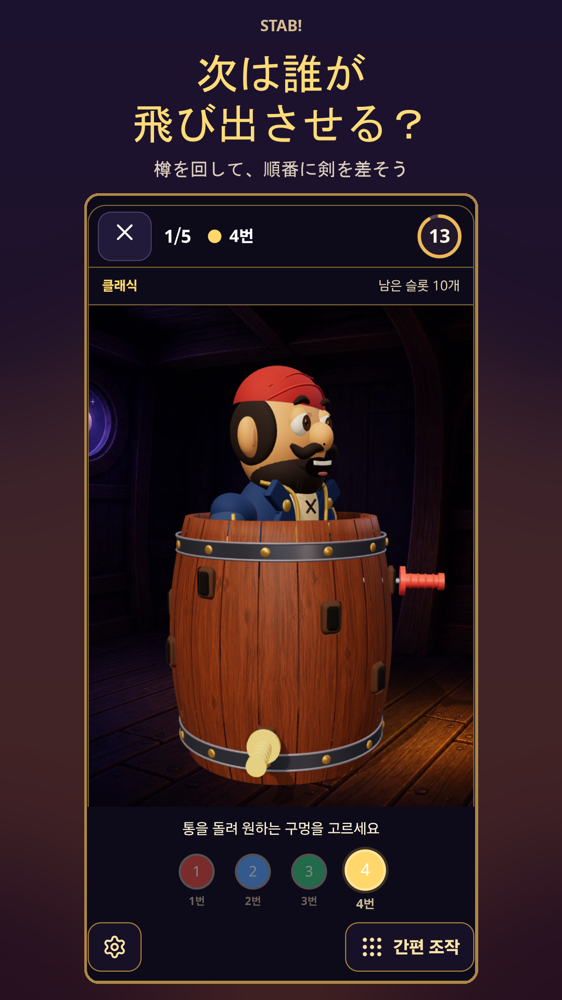
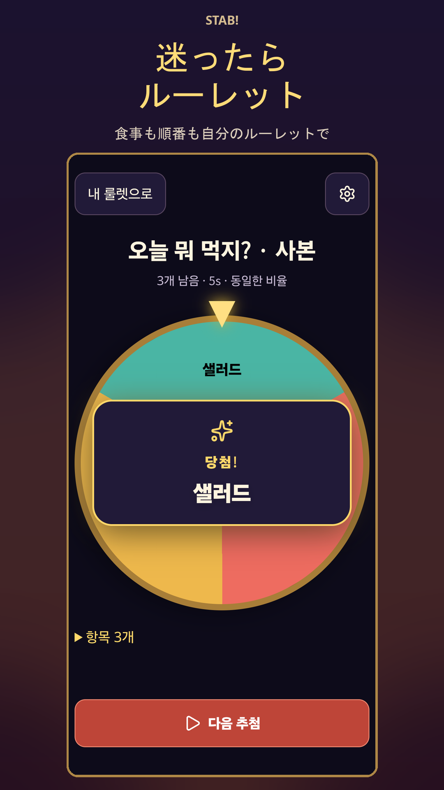
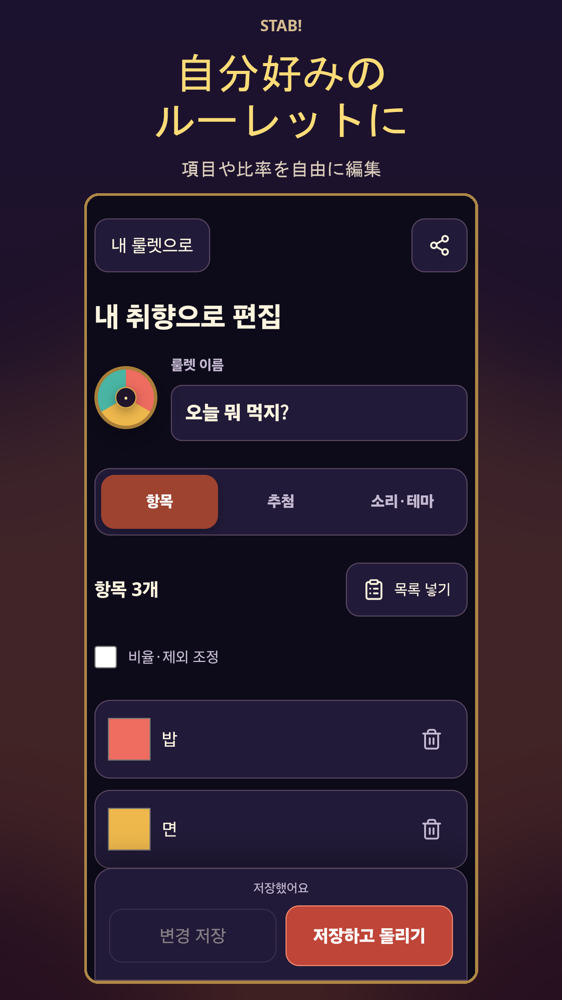

01 / 友達と集まったら
この剣で、飛び出す？
3Dの樽の空いている穴を選び、順番におもちゃの剣をさしましょう。海賊が飛び出す瞬間、みんなの視線が集まります。
海賊ルーレット → 人数設定 → 順番にプレイ
スマホ1台で、みんなの番。
STAB! / 海賊ルーレット＋カスタムルーレット
次は誰？ 今日なに食べる？
樽を回して剣をさしたり、候補を入れて回したり。
みんなの小さな時間を、もっと楽しく。
Android · 13歳以上 · 広告を含みます


実際のアプリ画面 · 韓国語UIを表示
PLAY / PICK / REPEAT
みんなで遊ぶときも、小さな選択に迷うときも。
01 / 友達と集まったら
3Dの樽の空いている穴を選び、順番におもちゃの剣をさしましょう。海賊が飛び出す瞬間、みんなの視線が集まります。
海賊ルーレット → 人数設定 → 順番にプレイ
02 / 今日なに食べる？
うどん、カレー、パスタなど、食べたい候補を入れて回しましょう。よく使う組み合わせを保存すれば、次に迷ったときもすぐに使えます。
カスタムルーレット → メニュー入力 → 回す
03 / 誰から始める？
発表の順番やおやつ担当など、選びたい項目を入力。「選ばれた項目を除外」を使えば、同じ項目を外しながら次を選べます。
項目入力 → 選ばれた項目を除外 → 順番に選択
IN THE APP
Androidの実機で撮影した画面です。ゲーム画面は韓国語で表示しています。

MAKE IT YOURS
自分のルーレットを保存して、お気に入りにまとめられます。項目の比率や回転時間を調整したり、結果カードを共有したりできます。
海賊ルーレットは、スマホ1台を囲んで順番に遊ぶローカルゲームです。離れた場所から参加するオンライン対戦ゲームではありません。
はい。カスタムルーレットに好きな項目を入力できます。項目ごとの比率を調整したり、選ばれた項目を次の回転から除外したりできます。
BGMと効果音の音量調整、振動のオフ、画面演出の軽減に対応しています。樽を回さずに穴を選べる、かんたん操作もあります。
広告を含むAndroidアプリで、13歳以上を対象としています。広告とデータの取り扱いについては、下のプライバシーポリシーをご確認ください。
写真なしでも始められます。選んだ顔写真はアプリ専用の保存領域に保管され、アプリからサーバーへアップロードされません。
下のお問い合わせメールに、アプリ名、機種、Androidバージョン、アプリバージョンと問題の内容をお送りください。スクリーンショット内の写真や名前などは隠してください。
READY WHEN YOU ARE
ゲームにも、小さな選択にも。STAB!を準備しておこう。
Google PlayでインストールAndroid · 13歳以上 · 広告を含みます